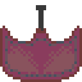

Asteroid Destroyer: Alpha

Note:
Please keep in mind the fact that this game is still in early development, and at times could be unplayable. The insperation for this game came from an older game called Asteroids. It was started for a school project.